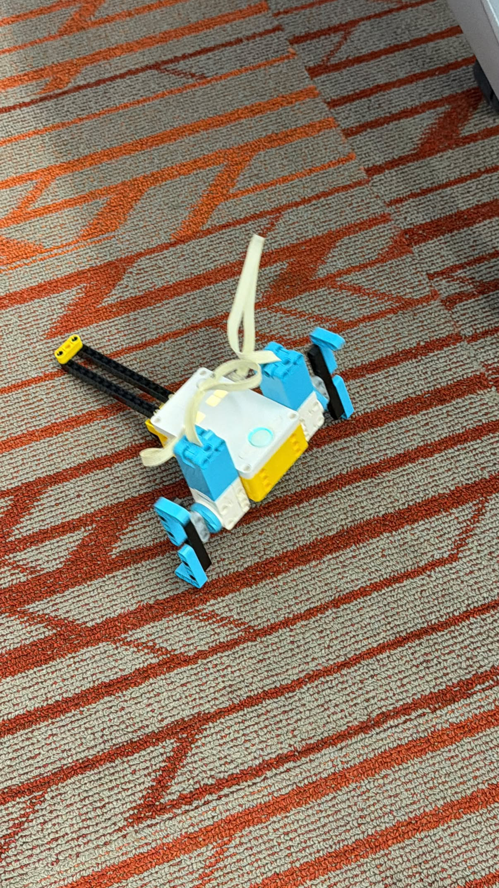

The goal of this project was to design a robot that could move without using wheels. We ended up adding a tail to help keep the robot balanced so it would not flip over while walking. Watch the video below if you would like to see it in action.